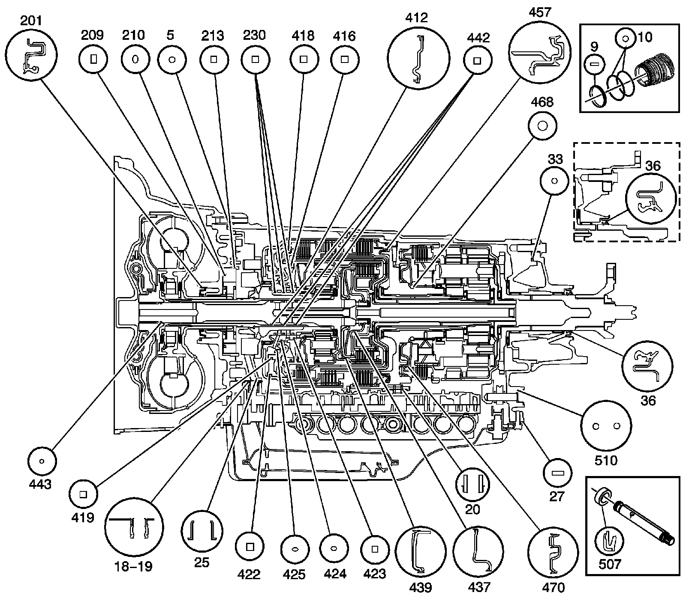

Seal Locations (6L50)
Seal Locations (6L50)
Seal Locations (6L50):

5 - A/Trans Fluid Pump Seal
9 - A/Trans Connector Seal
10 - A/Trans Connector (O-ring) Seal
18 - A/Trans Fluid Pump Seal Assembly
19 - A/Trans Fluid Pump Seal Assembly
20 - Center Support Fluid Passage Seal Assembly
25 - A/Trans Fluid Filter Seal Assembly
27 - A/Trans Fluid Pan Gasket
33 - A/Trans Case Extension Seal - 2WD Models Only
36 - Output Shaft Seal Assembly
201 - Torque Converter Fluid Seal Assembly
209 - A/Trans Fluid Pump Slide Fluid Seal Ring
210 - A/Trans Fluid Pump Slide (O-ring) Seal
213 - A/Trans Fluid Pump Slide Seal
230 - 1-2-3-4 and 3-5 Reverse Clutch Fluid Seal Ring
412 - 1-2-3-4 Clutch Piston Dam Assembly
416 - 1-2-3-4 Clutch Piston Seal
418 - 3-5 Reverse Clutch Piston Dam (O-ring) Seal
419 - 3-5 Reverse Clutch Piston Inner Seal
422 - 3-5 Reverse Clutch Piston Outer Seal
423 - 1-2-3-4 Clutch Piston Inner Seal
424 - 1-2-3-4 Clutch Piston Housing Seal
425 - 1-2-3-4 Clutch Piston Housing Seal
437 - 4-5-6 Clutch Piston Dam Assembly
439 - 4-5-6 Clutch Piston Assembly
442 - Turbine Shaft Fluid Seal Ring
443 - Turbine Shaft (O-ring) Seal
457 - 2-6 Clutch Piston Assembly
468 - Low Clutch Sprag Seal
470 - Low and Reverse Clutch Piston Assembly
507 - Manual Shift Shaft Seal
510 - Park Pawl Actuator Guide (O-ring) Seal